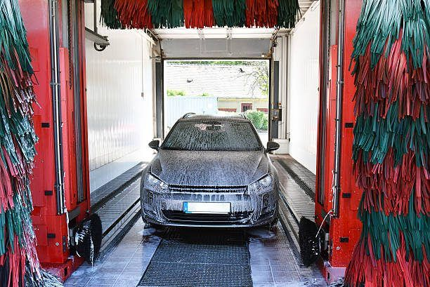
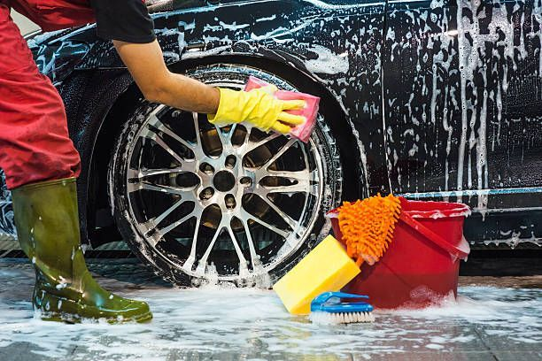
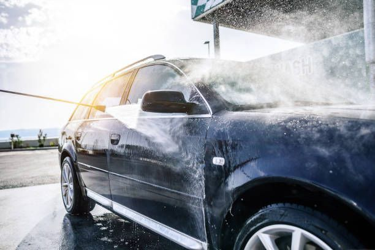
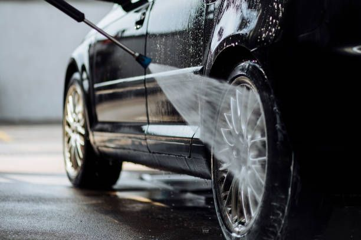

Basic wash
Exterior wash and dry for everyday upkeep.
JINJA ROAD · NAGURU · KAMPALA
A professional car wash and vehicle-care experience, with freshly brewed coffee, food and a comfortable place to wait. Wash first, warm up, then roll out ready.
Opening 1 January 2027
Careful vehicle washing. Friendly service. A better place to wait.
Our main business is car wash and vehicle care. Café and beauty services are complementary additions.
Choose a service that fits your vehicle and the time you have. Prices and final service options will be confirmed by the team before opening.
Exterior wash and dry for everyday upkeep.
Exterior clean with interior care for a fresh cabin.
Extra attention to the finish and details. Ask the team about availability.




Coffee, food and a comfortable waiting experience complement our vehicle-care service.
Espresso, cappuccino and other café favourites planned for the menu.
Enjoy a snack while your vehicle is being cared for.
Additional personal-care services are planned as part of the wider Bubbles & Brew experience.
Bookings are not yet connected to an operational booking system. Use this form to prepare your enquiry; it will not send a message or save it to a central register.
Near Ntinda trading centre.
Planned opening: 1 January 2027
Open map directions